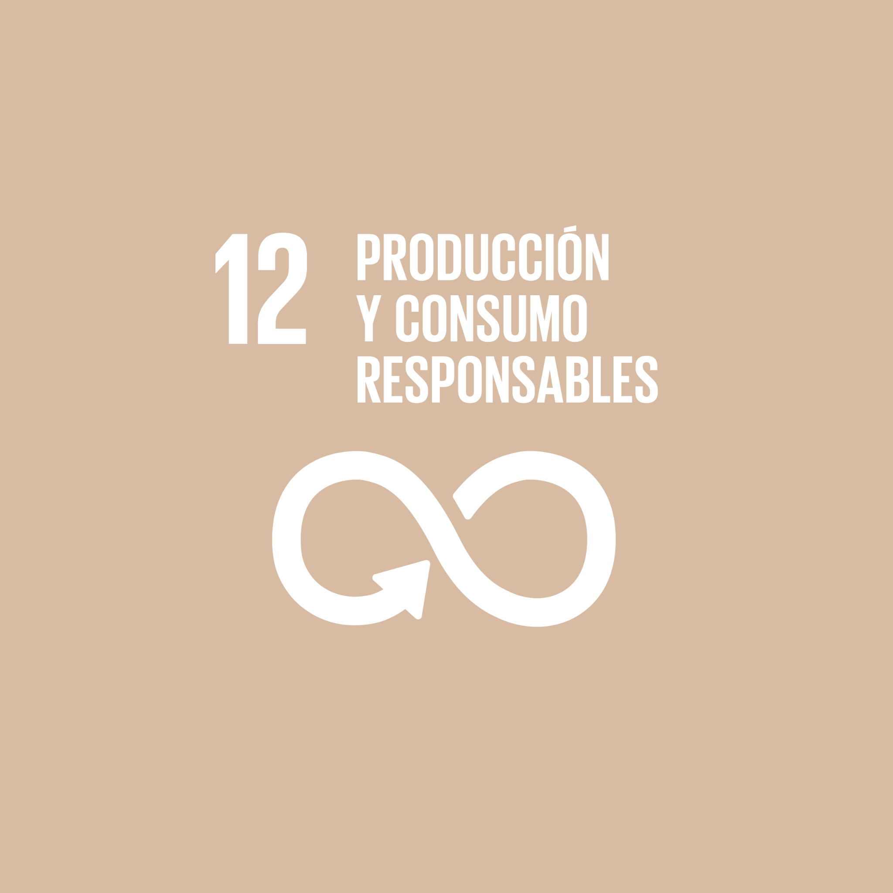

La Asamblea General de la ONU adoptó hoy la Agenda 2030 para el Desarrollo Sostenible, un plan de acción a favor de las personas, el planeta y la prosperidad, que también tiene la intención de fortalecer la paz universal y el acceso a la justicia. Explica cómo ha de procederse en 17 objetivos de desarrollo sostenible (ODS), que cubren todas las políticas públicas domésticas, la acción exterior y la cooperación para el desarrollo. Los ODS son universales, se aplican por igual a países desarrollados y en vías de desarrollo, abordan las raíces de la pobreza, la desigualdad y la degradación del planeta, y pretenden ser profundamente transformadores.
Producción y consumo sostenibles. Consiste en regular tanto los métodos de producción y el uso de recursos como en concienciar a la población de consumir de forma consciente y responsable.
